iOS Highlights
eQRHEmbraer S.A.
The goal here was to create a digital and interactive version of the old printed QRH manuals that every airplane must carry.
These manuals are extremely large and face many usability problems like not recording a “step by step history” of what the pilot actually followed, leaving the complex calculations for the pilot to solve manually and so on…
The interface reacts depending on what situation the pilot is facing. Using Paintcode to draw every UI element allowed me to reduce the bundle size to just a few MB.
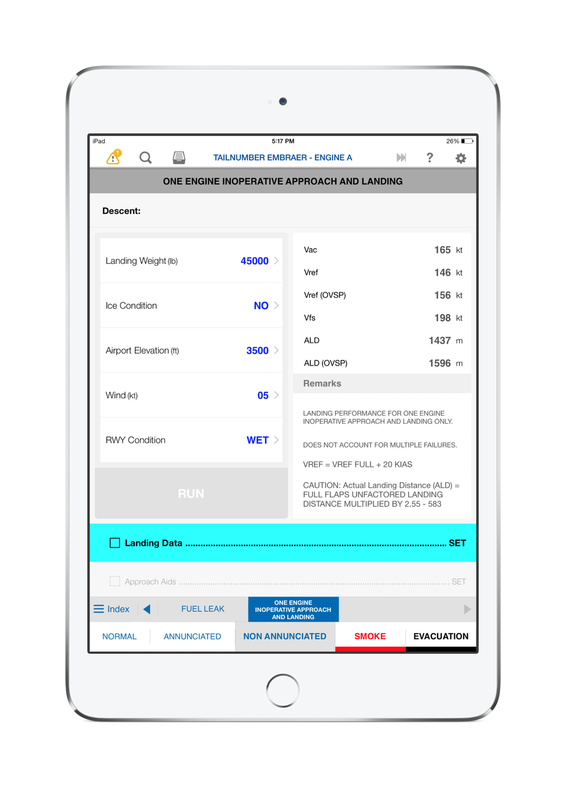
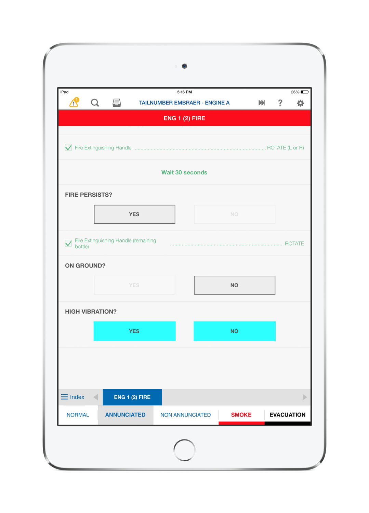
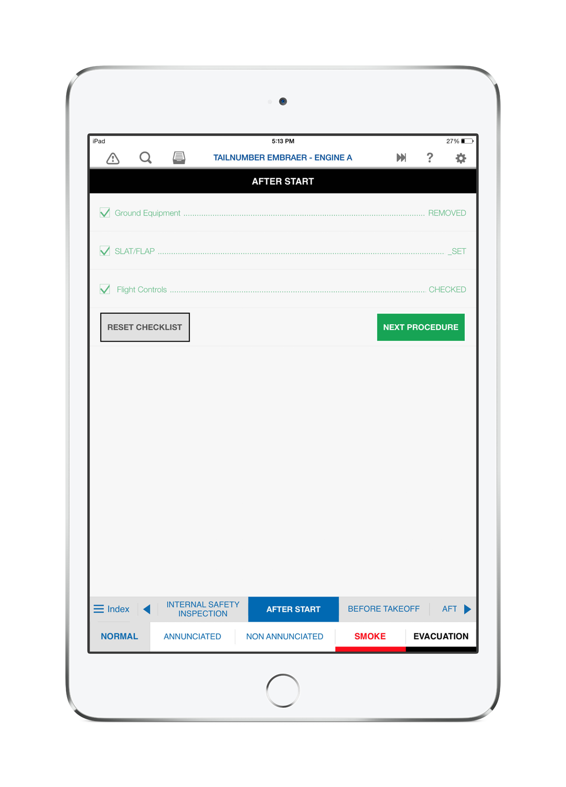
MyBLOXTyton Holdings
MyBLOX is the mobile version of the BLOX web app developed for Tyton Holdings, focused on the Employee side. Featuring an Apple Watch extension, it allows the employee to check his worked hours for the given period, request time offs, report shift incidents (with picture upload) and much more…
It also displays a QR Code badge that can be used to “Clock In and Out” on the BLOX Station iOS app.
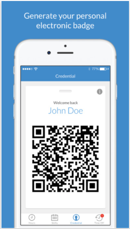
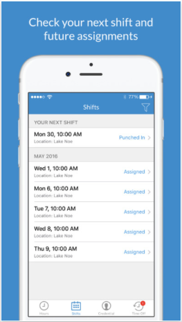
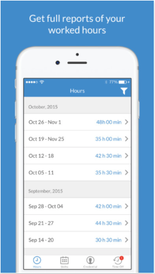
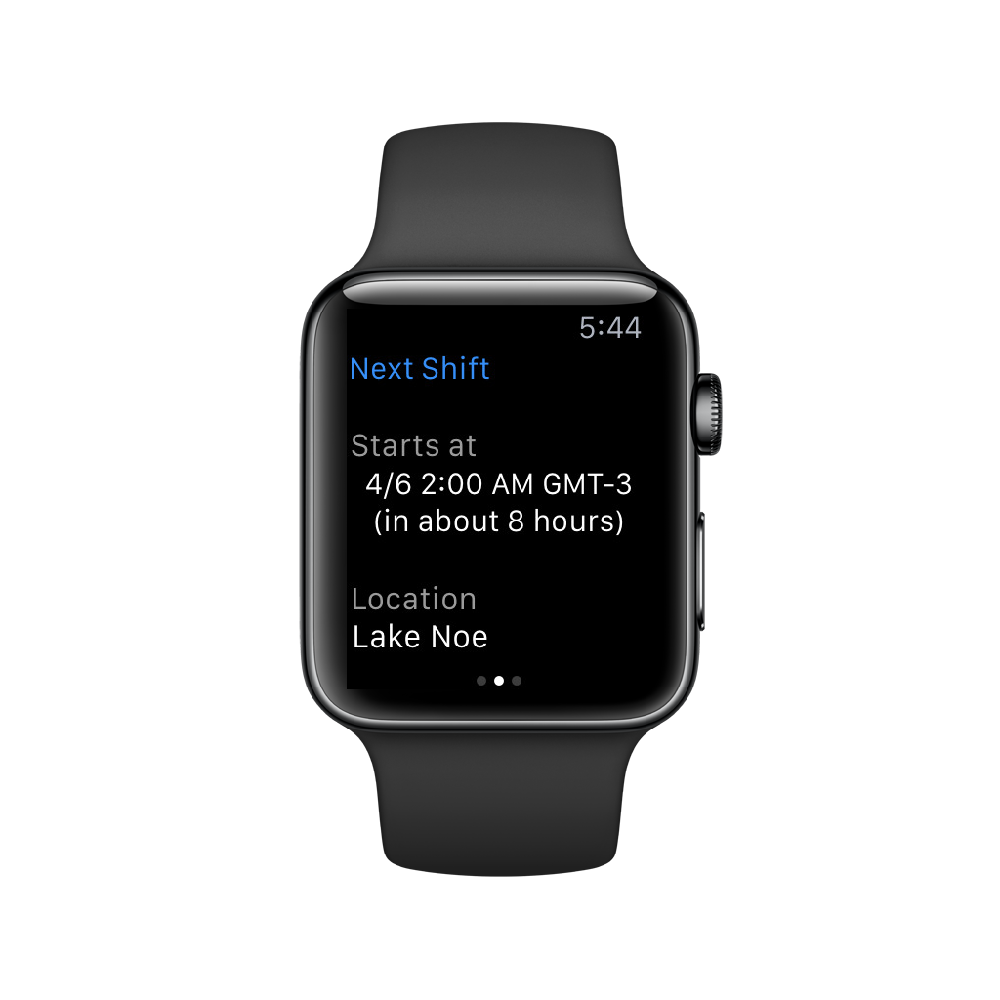
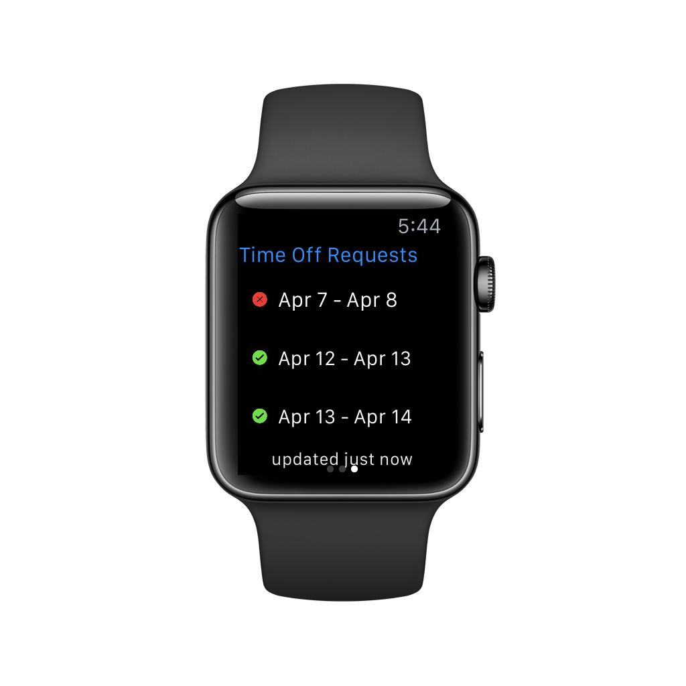
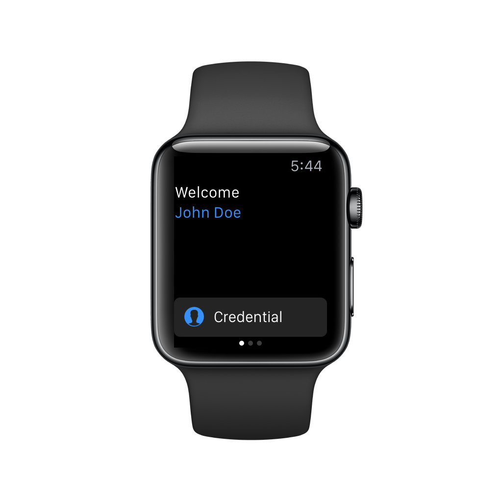
BLOX StationTyton Holdings
This app is mainly for giving BLOX employees a tool for Clocking In and Out of their shift. This can be done by logging in with ID and password, or using the camera to scan the Employee Badge created on the MyBLOX app. This way all shift locations have iPads with the BLOX Station installed. The employee comes in, waves his Apple Watch at the iPad camera and confirms his Clock In / Out on that location, not needing to type anything.
Another cool feature is geofencing, which only allows the employee to Clock In / Out if he is currently within X miles from that location (depending on what the location manager set up).
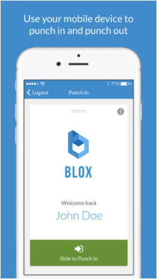
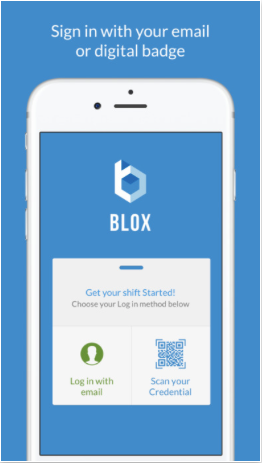
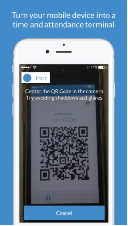
Web Highlights
BLOXTyton Holdings
BLOX is a web application focused on employee scheduling, hour control, payroll and much more. Leading the web team for over two years allowed me to take part on every step of this app creation.
I was responsible for splitting the road map in weekly sprints and assigning every task to our team with three web developers and one UI designer.
This was a Node.js project. On the front-end we used React.js, and for the back-end API, Loopback.
API testing and documentation was done via Postman software.
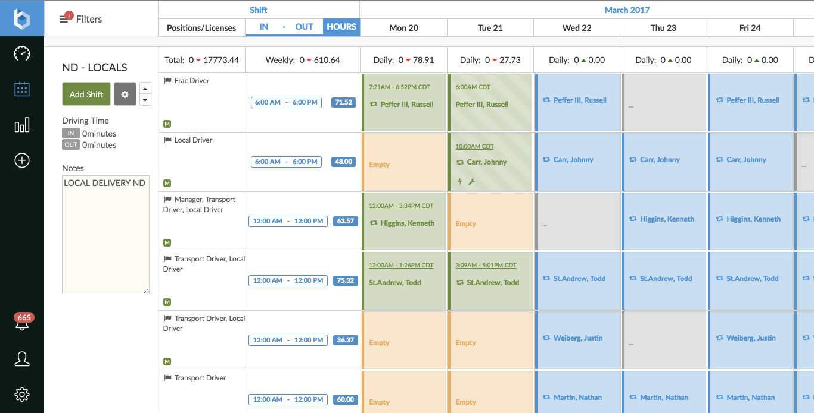
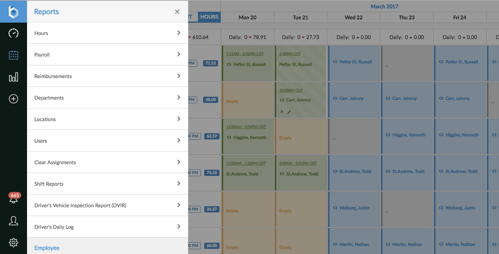
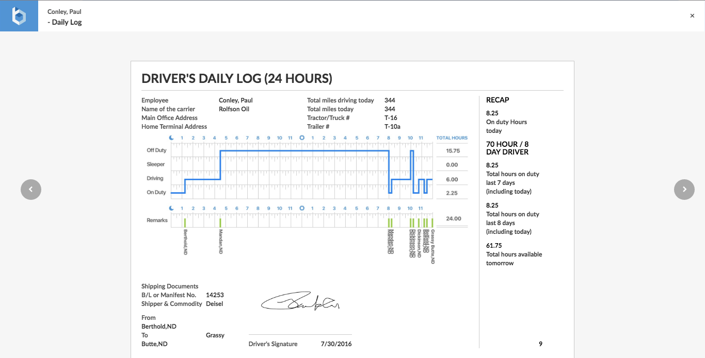
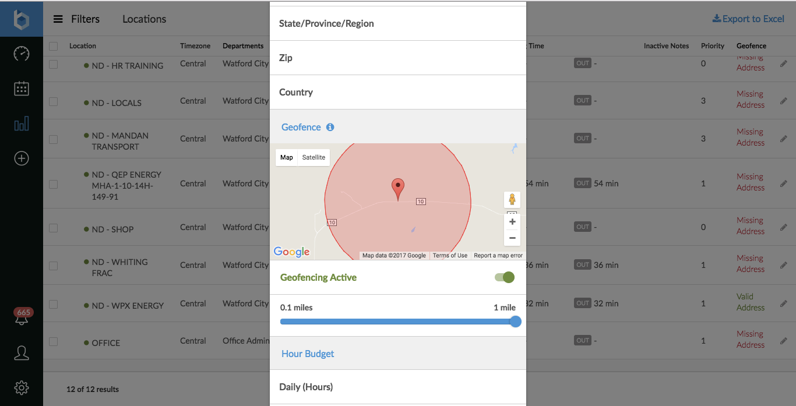
Fuel LogsTyton Holdings
Fuel Logs is a web system designed to automate the fuelling process by Rolfson Oil, a company from the Tyton Holdings group.
With an iOS companion app, the driver's shift was completely digitalized and monitored by their managers and customers in real time. This was a breakthrough solution on the segmnent.
Technologies used were PHP, HTML and MySQL.
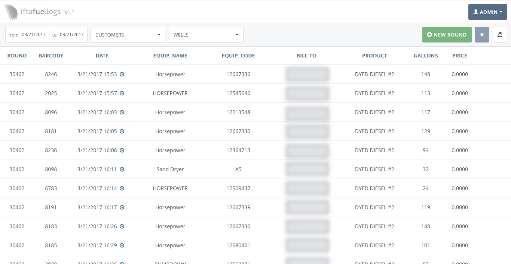
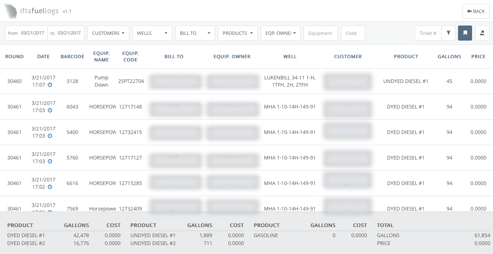
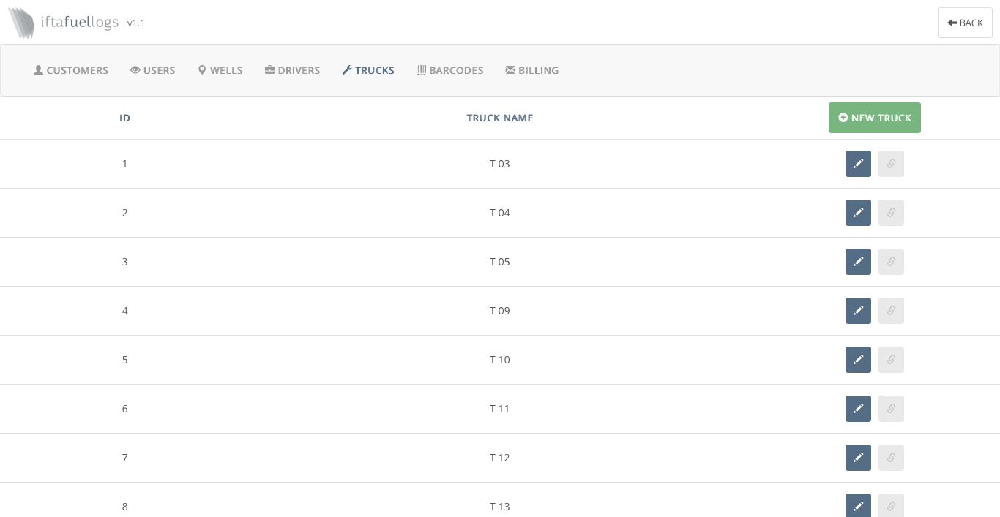